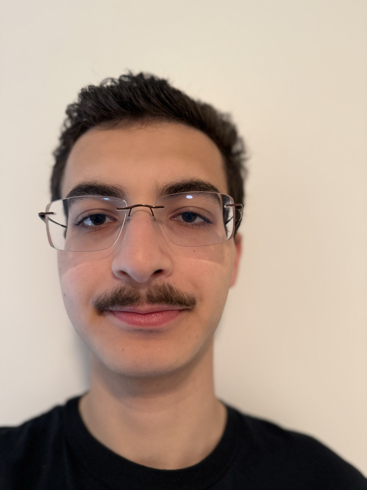
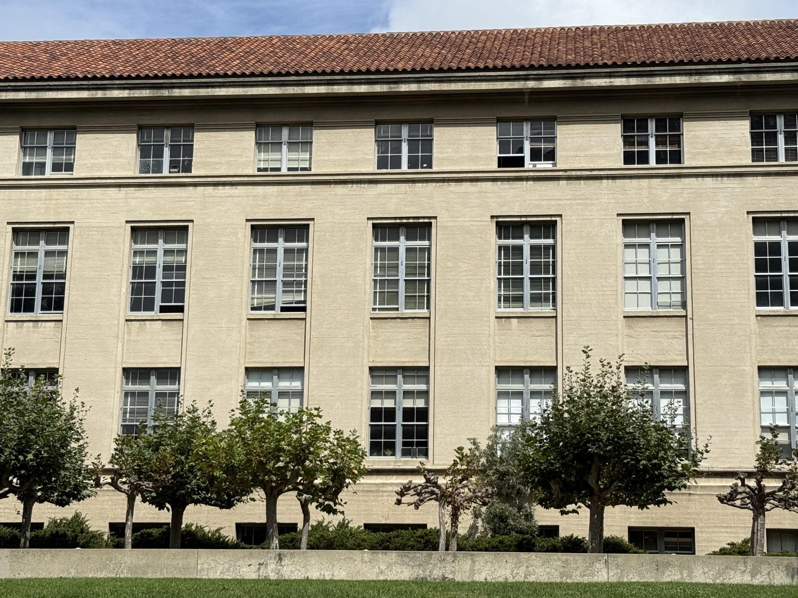
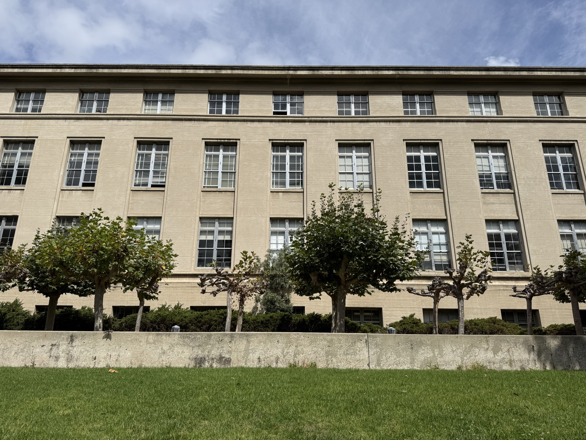
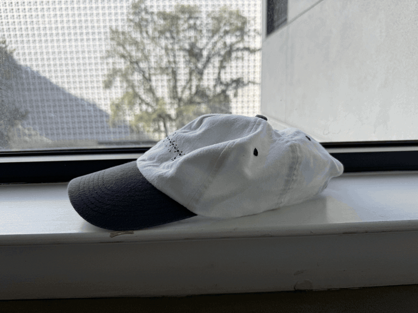

Project 0: Becoming Friends with Your Camera
Arshia Nayebnazar · CS180, Fall 2026 · back to portfolio
Part 1: Selfie

Part 2: Architectural Perspective Compression


Part 3: The Dolly Zoom

Arshia Nayebnazar · CS180, Fall 2026 · back to portfolio



